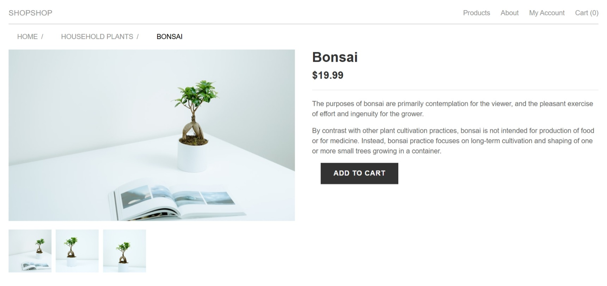
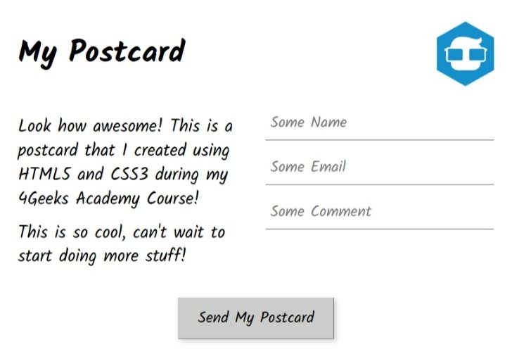
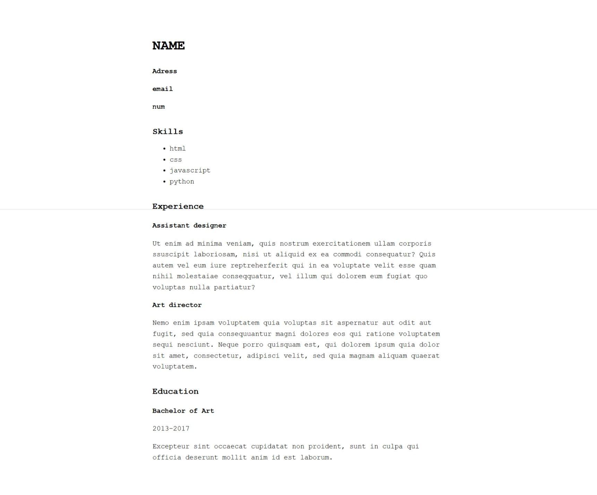
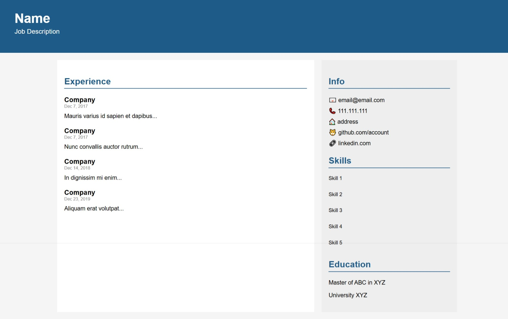
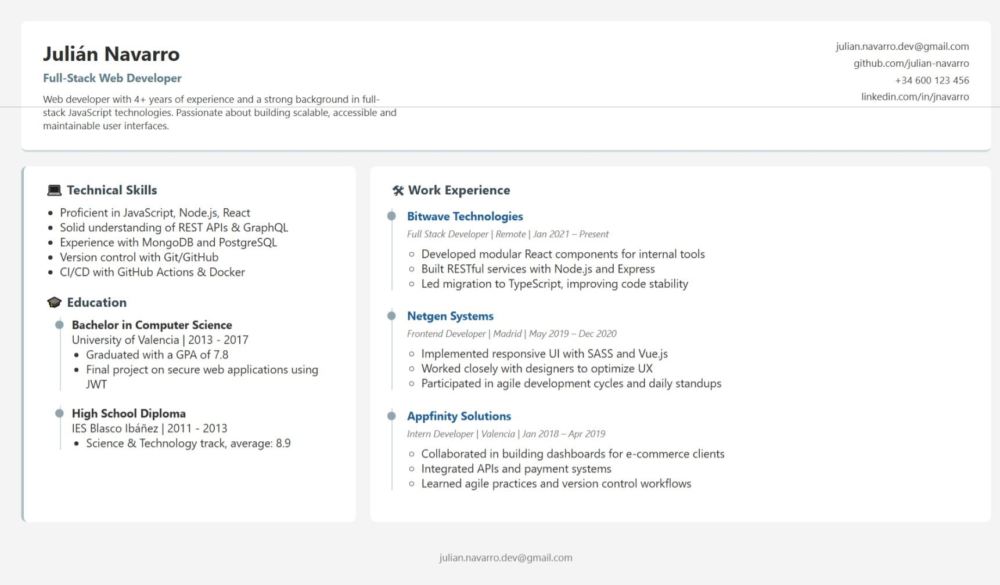
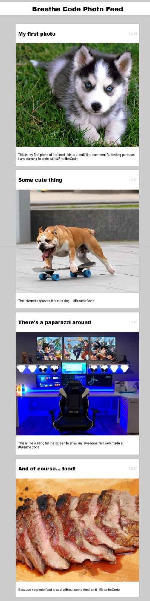

Perfil Profesional
Soy una desarrolladora full-stack en formación, autodidacta y apasionada por la tecnología. Empecé en este mundo como un hobby, pero pronto descubrí que era mi vocación. Hasta que no encuentro la solución, no paro. Me impulsa la curiosidad por entender cómo funcionan las cosas por dentro y encontrar soluciones innovadoras a cada desafío. Trabajo principalmente con HTML, CSS, JavaScript y Python, pero siempre estoy aprendiendo nuevas herramientas y frameworks para ofrecer las mejores soluciones. Me apasiona tanto el desarrollo frontend como backend, y estoy en constante exploración de nuevas tecnologías.
Mi objetivo es crear proyectos funcionales, escalables y de calidad que no solo cumplan con los requerimientos, sino que también ofrezcan una experiencia de usuario única. Me encanta trabajar mano a mano con los clientes para asegurarme de que sus necesidades se traduzcan de manera efectiva en código limpio y bien estructurado. Soy una persona con gran capacidad de adaptación, organización y trabajo en equipo, siempre dispuesta a afrontar nuevos retos y a seguir aprendiendo.
Cada proyecto es una oportunidad para crecer y mejorar. Si buscas a alguien comprometido, creativo, con enfoque en resultados y con una actitud constante de mejora, estaré encantada de ayudarte a materializar tu idea. Estoy lista para aportar mi energía y pasión a tu proyecto, asegurando que cada detalle sea ejecutado con precisión.
Proyectos Destacados
- 🛒 Producto Virtual: Página web que simula un producto a la venta en una tienda virtual. Desarrollada con HTML y CSS, diseñada para practicar la presentación de productos, el diseño de una página de producto y la estructura de una tienda en línea responsiva.
Ver proyecto
 - 🛍️ Página de Inicio de Shopify: Simulación de la página de inicio de una tienda en línea basada en Shopify. Creada con HTML y CSS, esta página imita el diseño de una tienda en línea, con una estructura clara, navegación intuitiva y una presentación visual atractiva, ideal para practicar la maquetación de tiendas virtuales responsivas.
Ver proyecto

- 📓 Generador de Excusas: Aplicación web simple en JavaScript para generar excusas aleatorias y divertidas.
Ver proyecto

- 🔤 Postcard virtual: Postcard digital personalizable.
Ver proyecto
 - 📄 CV Básico: Un currículum sencillo realizado con HTML y CSS, diseñado para mostrar de manera clara y funcional la información esencial como datos personales, experiencia laboral y formación.
Ver proyecto
 - 📄 CV Elegante: Un CV con un diseño más estilizado y moderno, utilizando HTML y CSS, con secciones bien diferenciadas, colores llamativos y una estructura adaptable a diferentes dispositivos.
Ver proyecto
 - 📄 CV Profesional: Un currículum de alto nivel con un diseño sofisticado, utilizando técnicas avanzadas de HTML y CSS. Presenta animaciones sutiles y una estructura que resalta la experiencia y habilidades profesionales de manera atractiva.
Ver proyecto
 - 📸 Feed: Página web que simula un feed usando HTML y CSS. Diseñada con una estructura clara y estilizada para practicar maquetación y estilos responsivos.
Ver proyecto

Habilidades y Formación
A lo largo de mi formación y experiencia, he adquirido una sólida base en desarrollo web full-stack. Mi enfoque autodidacta me ha permitido aprender rápidamente nuevas tecnologías, y siempre estoy en busca de mejorar mis habilidades para crear soluciones más eficientes y de mayor impacto.
Estas son algunas de mis principales habilidades y tecnologías que domino:
- Lenguajes de Programación:
- HTML5 & CSS3: Diseño y estructuración de páginas web semánticas, adaptables y accesibles. Trabajo con frameworks como Bootstrap y Sass para mejorar la eficiencia y la estética.
- JavaScript: Desarrollo de interfaces interactivas utilizando ES6, DOM Manipulation y frameworks como React.js para aplicaciones dinámicas.
- Python: Experiencia en scripting, automatización de tareas y desarrollo backend. Utilizo Python para proyectos de desarrollo web, data analysis y automatización.
- Frameworks y Librerías:
- React.js: Desarrollo de aplicaciones web interactivas y componentes reutilizables, optimizando la experiencia del usuario.
- Flask & Django: Desarrollo backend con Python para crear APIs RESTful, gestionar bases de datos y manejar autenticaciones de usuario.
- Node.js: Uso de JavaScript para desarrollo backend y creación de servidores rápidos y escalables.
- Bases de Datos:
- MySQL & PostgreSQL: Diseño y gestión de bases de datos relacionales, optimización de consultas y almacenamiento eficiente de datos.
- MongoDB: Base de datos NoSQL para proyectos con grandes volúmenes de datos no estructurados, permitiendo escalabilidad y flexibilidad.
- Control de versiones: Git, GitHub, GitLab. Trabajo en equipo y manejo de versiones para proyectos colaborativos, asegurando la integridad del código y el flujo de trabajo ágil.
- Otras herramientas: Docker para contenedores, Postman para testing de APIs, y Figma para prototipos de interfaces de usuario (UI).
Idiomas y Contacto
La comunicación efectiva es una de mis fortalezas, lo que me permite colaborar con equipos globales y entender las necesidades de mis clientes, independientemente de su ubicación. Hablo varios idiomas y estoy acostumbrada a trabajar en entornos multilingües, lo cual facilita la interacción con clientes y equipos de diferentes partes del mundo.
Idiomas:
- Español: Nativo. Comunicación fluida tanto de forma escrita como hablada. Me permite gestionar proyectos y colaborar con equipos de habla hispana de forma efectiva.
- Catalán: Nativo. Habilidad para comunicarme en ambos idiomas, lo que me da flexibilidad en proyectos en el mercado local.
- Inglés: Avanzado (técnico y comunicación escrita). Utilizo el inglés con fluidez para leer documentación técnica, trabajar en proyectos internacionales y comunicarme con clientes y equipos de diferentes países.
Además, la fluidez en estos idiomas me permite comprender y producir documentación técnica en diferentes lenguajes, lo que es fundamental cuando se trabaja con tecnologías y estándares globales.
Si deseas ponerte en contacto conmigo o explorar posibles colaboraciones, no dudes en usar cualquiera de los siguientes métodos:
📞 Teléfono: 613164717
✉️ Correo electrónico: munyii.hc@gmail.com
🔗 LinkedIn: Ver perfil de LinkedIn
🌐 Portfolio: Visitar portfolio online
💼 GitHub: Ver mis repositorios